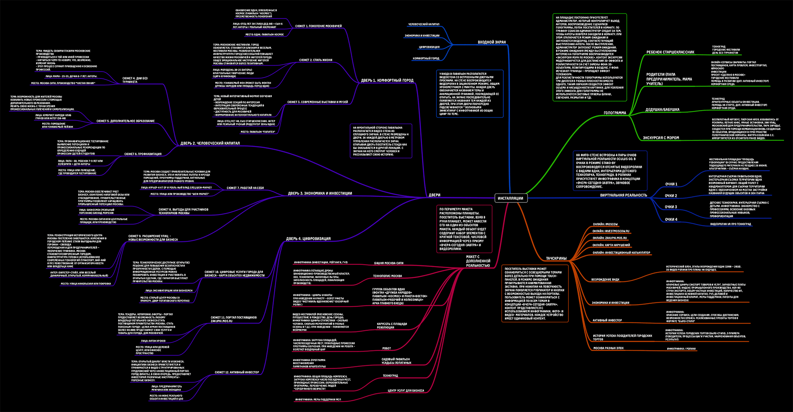

Urban Forum 2018
Multimedia booth for the Moscow City Government
The goal
A booth for a city government that speaks to residents in their own language — by showing plainly what is changing in the city.
The solution
We built a 100 sq m interactive pavilion. Six multimedia installations tell the story of the capital’s new initiatives in the voices of the people who live there. A media facade with 3D graphics, a scale model of Moscow with augmented reality and live infographics turn municipal data into an experience that is clear and worth staying for.
The project ran in four stages
- Project concept
- Developing the installations and producing the visual content
- Building the booth, installing the multimedia equipment
- Commissioning and on-site support during the event
Developing the concept for the installations
While the pavilion concept was taking shape we gathered material from five departments of the Moscow City Government. The data was sorted by topic and prioritized, and the Playdisplay creative team then formulated a set of multimedia solutions to carry the messages and the facts.

Graphics on the media facade
The media facade screened off the interior of the pavilion, which gave the hologram ideal conditions. The screen played a purpose-made 3D film — a composite architectural portrait of contemporary Moscow. Animated infographics and the headline figures ran over it as a separate layer.
Scale model with augmented reality
At the front of the booth stood a scale model with augmented reality — a composite architectural image of Moscow: the towers of Moscow City, the VDNH park, the technology parks. With a tablet in hand, visitors could see information about the projects of the Moscow City Government and the results achieved.
Part of: Exhibition stand · Mapping and models
Open the interactive version →